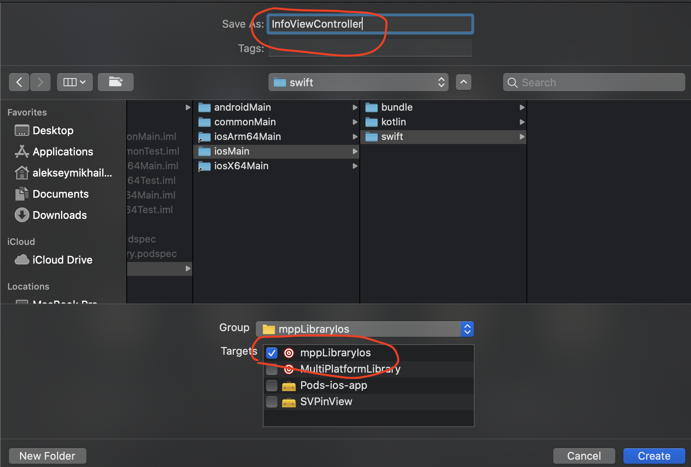
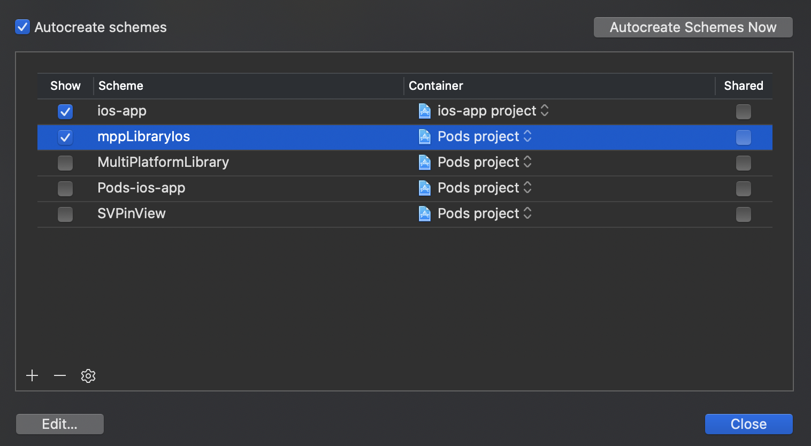
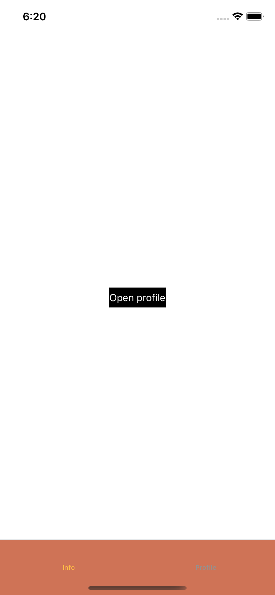

Урок является продолжением MOKO Widgets #5 - custom ViewFactory. Для выполнения данного урока нужно иметь проект, полученный в результате выполнения предыдущего урока.
Результатом прошлого урока было приложение с навигацией, стилизацией экранов и различными действиями на экранах и кастомными фабриками.
На этом уроке мы реализуем платформенный экран - верстка экрана будет сделана полностью нативными инструментами Android и iOS.
Возьмем InfoScreen, созданный на прошлых уроках как основу. На экране у нас должна быть кнопка, которая произведет переход на экран профиля, но сам интерфейс должен быть сделан на платформах.
Сначала выделим обработчик кнопки в отдельный метод:
class InfoScreen(
...
) : ... {
...
fun onProfileButtonPressed() {
routeProfile.route()
}
}
Далее заменим базовый класс - вместо WidgetsScreen будем использовать корневой класс - Screen, так как мы не будем создавать контент экрана виджетами. В итоге получим:
class InfoScreen(
private val theme: Theme,
private val routeProfile: Route<Unit>
) : Screen<Args.Empty>() {
fun onProfileButtonPressed() {
routeProfile.route()
}
}
На уровне общего кода IDE не покажет никаких ошибок, но каждая из платформ требует свою реализацию.
Например для Android InfoScreen становится обычным Fragment, в котором интерфейс нужно создавать через onCreateView, а для iOS InfoScreen даже не скомпилируется, так как не реализован абстрактный метод класса Screen - fun createViewController(): UIViewController. Из-за разницы платформ нам нужно использовать expect класс, но expect не может иметь никаких реализаций методов (как onProfileButtonPressed), поэтому сделаем InfoScreen абстрактным классом, а от него унаследуем expect class PlatformInfoScreen.
expect class PlatformInfoScreen(
theme: Theme,
routeProfile: Route<Unit>
) : InfoScreen
Добавим actual реализацию для класса PlatformInfoScreen на android (можно через меню с действиями opt + Enter от expect объявления класса).
Начальная реализация должна быть следующая:
actual class PlatformInfoScreen actual constructor(
theme: Theme,
routeProfile: Route<Unit>
) : InfoScreen(theme, routeProfile) {
}
После этого нужно реализовать создание интерфейса так, как того требует android. Для начала сделаем верстку экрана, для этого нужно добавить директорию res в mpp-library/src/androidMain и потом в ней New -> Layout XML File. Назовем лейаут screen_info.
В файле лейаута сделаем следующую верстку:
<FrameLayout xmlns:android="http://schemas.android.com/apk/res/android"
android:layout_width="match_parent"
android:layout_height="match_parent"
xmlns:app="http://schemas.android.com/apk/res-auto">
<Button
android:id="@+id/profile_btn"
android:layout_width="wrap_content"
android:layout_height="wrap_content"
android:layout_gravity="center"
app:backgroundTint="@android:color/black"
android:textColor="@android:color/white"
android:textAllCaps="false"
android:text="Open profile" />
</FrameLayout>
То есть просто расположим кнопку открытия профиля по центру, а саму кнопку немного стилизуем.
Остается загрузить эту верстку в классе экрана - для этого переопределим метод onCreateView:
actual class PlatformInfoScreen actual constructor(
...
) : ... {
override fun onCreateView(inflater: LayoutInflater, container: ViewGroup?, savedInstanceState: Bundle?): View? {
val view = inflater.inflate(R.layout.screen_info, container, false)
view.findViewById<Button>(R.id.profile_btn).setOnClickListener {
onProfileButtonPressed()
}
return view
}
}
Чтобы запустить и проверить остается заменить в mpp-library/src/commonMain/kotlin/org/example/mpp/App.kt класс, используемый для создания экрана:
class App : BaseApplication() {
override fun setup(): ScreenDesc<Args.Empty> {
...
return registerScreen(RootNavigationScreen::class) {
...
val mainScreen = registerScreen(MainBottomNavigationScreen::class) {
...
val infoScreen = registerScreen(PlatformInfoScreen::class) {
PlatformInfoScreen(theme, bottomNavigationRouter.createChangeTabRoute(2))
}
...
}
...
}
}
}
Теперь можно открыть приложение и на главном экране вкладка Info будет оформлена так, как мы сделали в платформенной реализации.

Добавим actual реализацию для класса PlatformInfoScreen на ios (можно через меню с действиями opt + Enter от expect объявления класса).
Начальная реализация должна быть следующая:
actual class PlatformInfoScreen actual constructor(
theme: Theme,
routeProfile: Route<Unit>
) : InfoScreen(theme, routeProfile) {
override fun createViewController(): UIViewController {
TODO("not implemented") //To change body of created functions use File | Settings | File Templates.
}
}
Нам остается добавить реализацию создания UIViewController нашего экрана.
Для этого нам потребуется:
- Создать локальный
CocoaPod, в котором будет наша нативная реализация экрана; - Подключить новый
CocoaPodкmpp-library; - Создать объект нативного класса в методе
createViewControllerвKotlin.
Создание CocoaPod
Создадим файл mpp-library/mppLibraryIos.podspec с содержимым:
Pod::Spec.new do |spec|
spec.name = 'mppLibraryIos'
spec.version = '0.1.0'
spec.homepage = 'Link'
spec.source = { :git => "Not Published", :tag => "Cocoapods/#{spec.name}/#{spec.version}" }
spec.authors = 'IceRock Development'
spec.license = ''
spec.summary = 'Shared code between iOS and Android'
spec.module_name = "#{spec.name}"
spec.source_files = "src/iosMain/swift/**/*.{h,m,swift}"
spec.resources = "src/iosMain/bundle/**/*"
spec.ios.deployment_target = '11.0'
spec.swift_version = '5.0'
spec.pod_target_xcconfig = {
'VALID_ARCHS' => '$(ARCHS_STANDARD_64_BIT)'
}
end
Это настройки локального CocoaPod, согласно которым файлы исходного кода будут находиться в директории mpp-library/src/iosMain/swift, а файлы ресурсов (изображения, xib и прочее) в директории mpp-library/src/iosMain/bundle.
Теперь подключим данный CocoaPod к проекту - добавим в ios-app/Podfile:
...
target 'ios-app' do
...
pod 'mppLibraryIos', :path => '../mpp-library'
end
После этого можно выполнить pod install (в директории ios-app) чтобы была произведена настройка Pods проекта.
Теперь нужно добавить файлы для нативной реализации. Для этого в Xcode создаем файлы:
mpp-library/src/iosMain/swift/InfoViewController.swiftmpp-library/src/iosMain/bundle/InfoViewController.xib
Создаем в группе mppLibraryIos:
Для таргета mppLibraryIos:

Реализация нативного экрана
В файле mpp-library/src/iosMain/swift/InfoViewController.swift добавим реализацию:
@objc public class InfoViewController: UIViewController {
@objc public var onProfileButtonPressed: (() -> Void)? = nil
@IBAction func onProfileButtonTap() {
onProfileButtonPressed?()
}
@objc public static func create() -> InfoViewController {
return InfoViewController(
nibName: nil,
bundle: Bundle(for: InfoViewController.self)
)
}
}
Далее перейдем к настройке интерфейса в mpp-library/src/iosMain/bundle/InfoViewController.xib:
- Укажем в
File's Ownerнаш классInfoViewController:

- Добавим кнопку на корневую
Viewи настроим связи - центрирование по контейнеру:

- Настроим внешний вид кнопки - заголовок, цвет текста, цвет фона:

- Укажем связь
ViewиFile's Owner- корневаяviewпривязывается к аутлетуview, действиеonProfileButtonTapпривязывается к кнопке на событиеTouch Up Inside:

- Далее попробуем собрать фреймворк - для этого в схемах включим отображение схему
mppLibraryIosи, выбрав ее, произведем сборку:

Если все было успешно собрано, значит можно переходить к подключению нативного фреймворка в Kotlin.
Подключение нативного экрана к mpp-library
Сначала требуется добавить новый CocoaPod в список подключенных к Kotlin.
mpp-library/build.gradle.kts:
...
cocoaPods {
...
pod("mppLibraryIos")
}
После добавления настройки нужно вызвать Gradle Sync и в панели управления Gradle мы сможем вызвать задачу cinteropCocoapodMppLibraryIosIosX64:

После завершения работы задачи cinteropCocoapodMppLibraryIosIosX64 требуется сделать Gradle Sync, чтобы IDE корректно считала сгенерированные данной задачей klib'ы с нативными классами.
Далее можно открыть mpp-library/src/iosX64Main/kotlin/org/example/mpp/info/PlatformInfoScreen.kt и внести изменения:
actual class PlatformInfoScreen actual constructor(
...
) : ... {
override fun createViewController(): UIViewController {
val vc = InfoViewController.create()
vc.setOnProfileButtonPressed {
onProfileButtonPressed()
}
return vc
}
}
На этом все готово и можно запустить iOS приложение, в котором увидим:
